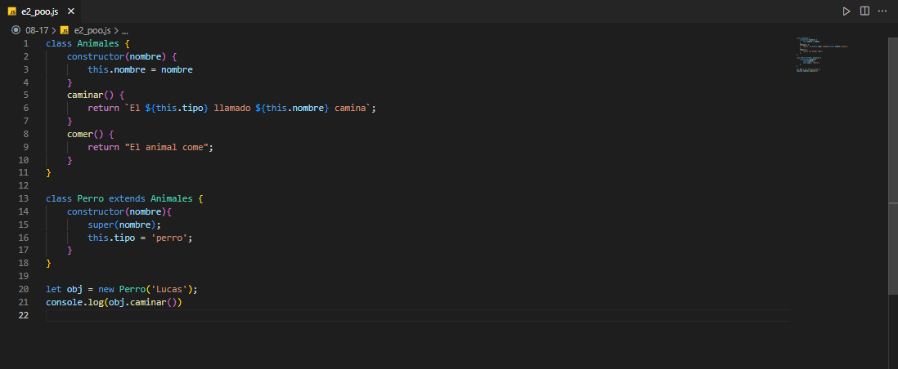

Prototipos y herencias de prototipos
Javascript es un lenguaje de programación dinámico y no implementa clases por sí mismo; aunque llegó una actualización que aparentemente trajo las funciones a javascript (se pueden usar palabras reservadas como ‘class’), en realidad por debajo realiza lo mismo que en su base o estructura se puede usar en el contexto de prototipos y su herencia…
Ahora, entrando en detalle:
Javascript implementa el uso de objetos, es como si fuera su esqueleto. Cada objeto tiene una propiedad privada, referida como su prototype, esta propiedad es funcional en el contexto en que queramos definir funciones, clases y/o metodos, ya que esta propiedad tiene la particularidad de que puede ser llamada o accedida por otros objetos, ya que es como si globalmente, al crear un objeto, se creara ese prototipo en todo el programa; y nosotros podemos usar esa propiedad para “enlazar” el objeto (que ahora sabemos, puede ser una función u otro tipo de dato relacionado), a otra función (como si fuera algún tipo de extensión).
Veamos unos ejemplos:
Programación orientada a objetos (POO)
Viene de programación orientada a objetos. El cual es un modelo de programación que básicamente se basa en la reutilización de código usando clases (que son como bloques grandes de código), objetos (que son unidades o elementos a los que se les podrán aplicar ciertos comportamientos y ciertas características que sean útiles al programador), métodos (que son acciones que el objeto desarrollará y desencadenará) y atributos (que son características que tendrá el objeto).
En javascript (como se dijo anteriormente) usa prototipos para que, en la actualidad, se pueda usar javascript para crear código basado en Programacion orientada a objetos.
Se usa la palabra reservada class para crear clases; además, dentro de las clases se crean los métodos directamente (sin escribir ‘function’ ni usar prototype).
Veamos un ejemplo para comprenderlo mejor:

Expresiones Regulares
Se pueden entender como un sistema que sirve para buscar, capturar o cambiar texto usando patrones (entendiéndolos como, por ejemplo, un conjunto de condiciones con las que le decimos al programa que nos clasifique y desarrolle cierta acción cuando en una cadena de texto se cumpla con dichas condiciones).
Este sistema se vuelve necesario cuando requerimos que un texto cumpla con ciertas características específicas que son muy difíciles de determinar con funciones básicas que se aplican a las cadenas de caracteres.
Teniendo en cuenta el anterior contexto, veamos unos ejemplos de expresiones regulares aplicadas:
Módulos import y export
Los módulos import y export nos sirven para enviar y recibir elementos entre archivos de javascript (estos elementos pueden ser desde variables hasta clases), y nos permiten separar nuestros proyectos, lo cual puede ser muy bueno y aprovechable cuando trabajemos proyectos grandes en los que se necesite reutilizar código para mantener una buena organización y sea importante el espacio de almacenamiento usado junto con la mantenibilidad del proyecto.
Estos módulos se pueden usar muy fácilmente:
El modulo export se usa al escribir literalmente “export” al inicio del elemento a compartir, ya sea una variable, una función, etc.
El módulo import es recomendable ponerlo al inicio del archivo a recibir los datos de otro, y allí se especifica qué se importará y de donde vendrá (nombre del archivo que contiene los elementos a exportar).
Veamos un ejemplo:
SeTimeout y SetInterval
Setimeout es un método que permite ejecutar un fragmento de código transcurrido cierto tiempo (el cual nosotros podemos establecer), como si fuera un temporizador.
El método setinterval permite ejecutar cierto código repetidamente con cierto tiempo “de espacio” en medio de cada ejecución.
Veamos dos ejemplos:
Operaciones sincrónicas y asincrónicas
Las operaciones sincrónicas hacen referencia a que javascript permite (como es normal al hacer programas), desarrollar proyectos que siguen cierto orden de ejecución (en cuanto a qué va antes de otra cosa, y el llamado que se puede hacer a estas cosas); lo podemos entender con un ejemplo:
Podemos tener 3 funciones, si cada una es independiente, podemos llamarlas en cierto orden y ellas se ejecutarán en aquel orden. Si hacemos que una llame a la otra dentro de sí, y que lo mismo pase con la siguiente, lo que haremos será crear un orden de ejecución que el proyecto de javascript de alguna forma “guarda en su memoria”, logrando que al ejecutar una función, esta haga el llamado a la siguiente, pero que no termine la ejecución ni el orden de llamado de esta función inicial, sino que se queda en una lista de espera, la cual continúa con la siguiente función, y luego con la siguiente; al ejecutar la última y terminar su ejecución, se libera ese llamado y en el mismo orden de llamada se devuelve, pasando a la anterior función, termina su ejecución, y luego va con la anterior a esa en el orden de llamados inicial, permitiendo que se mantenga ese orden y sincronía según cada llamado y lo que le compete.
Mientras que las operaciones asincrónicas hacen referencia a operaciones que se pueden hacer, que llegan a quedar en una lista de espera para ser terminadas, pero sin necesidad de tener alguna unión con otra función o propiedad en ejecución.
Podemos verlo reflejado en, por ejemplo, un llamado al método setimeout, este lo que va a hacer será ejecutar un bloque de código pero a su vez parece que queda en espera (gracias a que es como un temporizador), y pueden hacerse otras operaciones mientras que la operación del llamado al método setimeout termina, logrando hacer varias cosas al mismo tiempo, con otro orden, pero sin abortarse la operación asincrónica del setimeout.
Veamos los ejemplos directamente escritos en código para comprenderlos mejor:
Callbacks y Promesas
Los callbacks se pueden entender como ejecuciones de código que devuelven algo para ser usado luego. Imagine que tenemos una función, aquella función se espera que realice una suma, pero no la hará dentro, sino en el llamado a la misma; esto ocurrirá ya que, en la llamada a la función, se recibirán los dos números involucrados y una función, la cual hará la operación. Esto es importante ya que el callback se podría entender como ese trozo de código que desarrollará algo con unos datos y retornará otra cosa; en el caso, la función recibe otra función (o callback), y al ejecutar la función inicial, lo que ocurrirá será que ese callback recibirá los datos, hará la operación, y los retornará sumados, haciendo el llamado interno a la función del callback y resultando en la ejecución correcta de la suma. En un momento lo veremos en aplicación.
Las promesas, son parecidas a los callbacks en cuanto a que ejecutan cierto proceso con cierta información recibida, solo que se diferencian en el hecho de que las promesas tienen una sintaxis definida y, además, es como si fueran un callback definido dentro de javascript sin necesidad de nosotros crearlo como una función. Es decir, una promesa es como una función de un callback, que es lo suficientemente sofisticada como para manejar la información que recibe, es capaz hasta de detectar problemas en la obtención y procesamiento de la información y operaciones a desarrollar con ella, y es capaz de extender el resultado de su ejecución, que por medio de unas líneas de código se puede obtener fácilmente.
Veamos unos ejemplos para entender mejor que son cada una y sus diferencias:
Sets y maps
Los sets son una estructura de datos de javascript que tiene la particularidad de que no permite que los datos insertados se repitan; puede contener varios tipos de datos dentro.
Los maps son una estructura de datos de javascript que se parecen mucho a los objetos, pero diferenciándose en que los map aceptan inserciones de claves con datos de varios tipos (aparte de strings o symbols, como lo hacen los objetos), además, tienen propiedades y métodos especiales para esta estructura de datos.
Ahora vamos con los ejemplos: